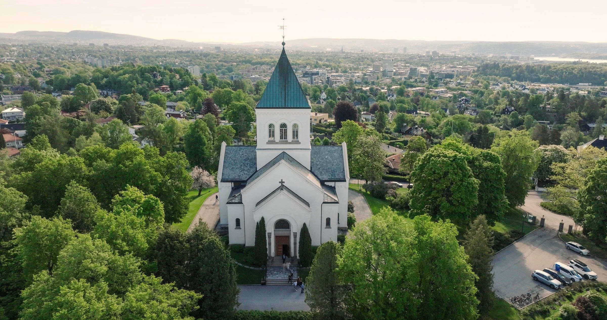

Vielse

Ullern kirke
Dato og tid
Lørdag 9. mai 2025 kl. 13:00
Vielse
Vi ønsker mobilfri vielse og setter stor pris på om dere lar kameraene hvile i kirken. Vi har med oss profesjonell fotograf som vil fange øyeblikkene for oss, og bildene vil selvfølgelig bli delt med alle gjestene i etterkant.
Etter vielsen er det fritt fram for å ta egne bilder.
Etter vielsen er det fritt fram for å ta egne bilder.
Transport
Det vil bli satt opp buss fra kirken til festlokalet etter vielsen.